Scenario 4: Advanced Networking with Cilium CNI in Kubernetes
In this lab, you will install the Cilium CNI into a KinD cluster using Helm and learn how Cilium extends Kubernetes networking beyond what traditional CNIs like Calico offer. Cilium leverages eBPF (extended Berkeley Packet Filter) to provide high-performance networking, observability, and security—including L7 (application-layer) policy enforcement.
You will create a cluster without a default CNI and without kube-proxy, install Cilium via Helm, enable Hubble for real-time network observability, build a complete network policy stack that includes both standard L3/L4 and Cilium-native L7 HTTP policies, and then expose your secured application to the outside world using LoadBalancer services with L2 announcements.
Goals
By the end of this lab, you will be able to:
- Create a KinD cluster without a default CNI and without kube-proxy
- Install Cilium CNI using Helm (and understand the difference vs. static manifests)
- Verify Cilium and Hubble are operational
- Access the Hubble UI from your remote workstation
- Apply Kubernetes NetworkPolicies (deny-all, allow-dns, allow-http)
- Apply Cilium L7 HTTP-aware policies using CiliumNetworkPolicy
- Apply Cilium FQDN-based egress policies
- Configure L2 announcements and LoadBalancer services to expose secured workloads
- Use Hubble CLI and UI to observe and debug policy enforcement in real time
Estimated Completion
1.5 hr
Prerequisites
Before starting this lab, you should have:
- Completed Labs 0–2
- Docker image:
lab1-express:1.0(from Lab 1) - Familiarity with Kubernetes NetworkPolicies (Lab 3)
- Cilium CLI and Hubble CLI installed (verified in Lab 0, Tasks 5.1 and 5.2)
Verify Cilium CLI:
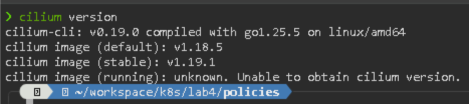
Verify Hubble CLI:
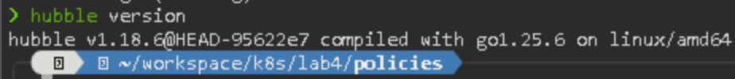
Verify the lab1-express image is available:
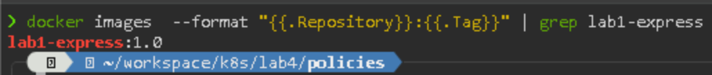
The
--format "{{.Repository}}:{{.Tag}}"is a helper to filter for specific fields in the Docker API. if you usedocker image | grep lab1instead, you will get a warning
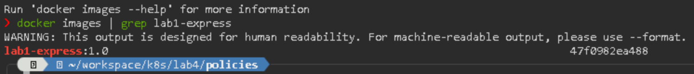
Workspace
KinD cluster configuration:
Kubernetes and Cilium manifests:
Tasks
The diagram is a summary of all the elements we are going to use during this lab.
Task 1: Create a KinD Cluster without CNI and without kube-proxy
In Lab 3, you created a cluster with disableDefaultCNI: true to install Calico. In this lab, you will also disable kube-proxy so that Cilium can fully replace it using eBPF-based packet processing. This is known as kube-proxy replacement and is the recommended deployment model for Cilium.
1.1 Create the KinD configuration folder
1.2 Create the KinD cluster configuration file
Create a file named kind-cilium-config.yaml:
kind: Cluster
apiVersion: kind.x-k8s.io/v1alpha4
nodes:
- role: control-plane
extraPortMappings:
- containerPort: 30000
hostPort: 30000
- containerPort: 31100
hostPort: 31100
- containerPort: 31200
hostPort: 31200
- containerPort: 31300
hostPort: 31300
- containerPort: 31400
hostPort: 31400
- containerPort: 31500
hostPort: 31500
- role: worker
- role: worker
networking:
disableDefaultCNI: true
kubeProxyMode: "none"
Key differences from Lab 3:
disableDefaultCNI: true— same as before, prevents KinD from installing the default kindnet CNIkubeProxyMode: "none"— new: disables kube-proxy entirely, allowing Cilium to handle all service routing via eBPF
1.3 Create the cluster
Expected Result:
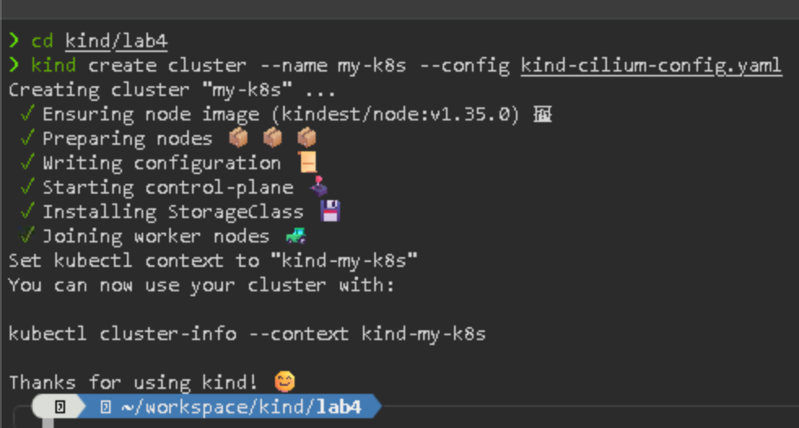
1.4 Verify the cluster nodes are Not Ready
Expected Result:
All nodes should show NotReady status — this is expected because no CNI is installed yet.
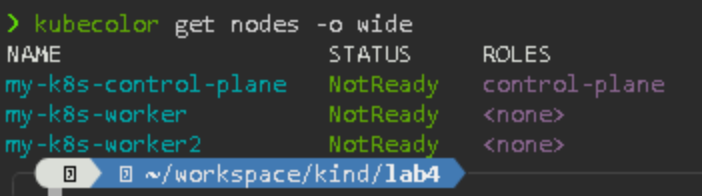
1.5 Verify kube-proxy is NOT running
Expected Result:
You should not see any kube-proxy pods. You will see coredns pods in Pending state (waiting for the CNI).
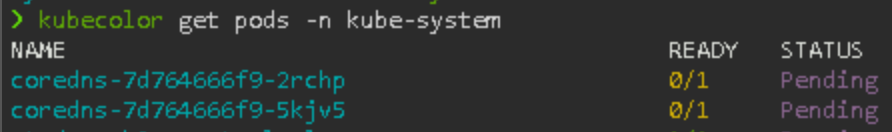
Kube-Proxy is a Kubernetes agent installed on every node in the cluster. Kube-proxy implement mapping "Service to Pod". When traffic reaches the Service, it is redirected to the backend Pods accordingly.
Task 2: Install Cilium CNI using Helm
In Lab 3, Calico was installed using a static YAML manifest (kubectl apply -f calico.yaml). In this lab, you will install Cilium using Helm, which is the recommended installation method.
Manifests vs. Helm Charts
| Aspect | Static Manifest (kubectl apply -f) |
Helm Chart (helm install) |
|---|---|---|
| Configuration | Edit YAML directly | Use --set flags or values.yaml |
| Upgrades | Re-download and re-apply manually | helm upgrade with version control |
| Rollback | Manual | helm rollback built-in |
| Customization | Search-and-replace in large YAML | Templated, parameterized values |
| Reproducibility | Hard to track what changed | Version-pinned, declarative |
| Best for | Quick demos, simple installs | Production, repeatable environments |
Helm is a package manager for Kubernetes. A Helm chart is a collection of templates and default values that produce Kubernetes manifests. Think of it as
docker composebut for Kubernetes resources.
2.1 Add the Cilium Helm repository
Expected Result:
"cilium" has been added to your repositories
...Successfully got an update from the "cilium" chart repository
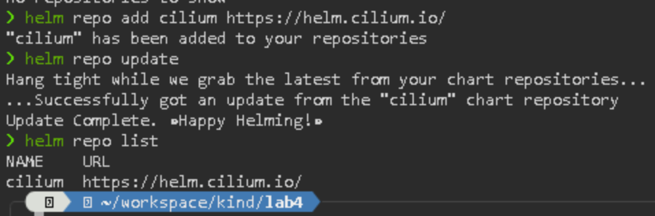
2.2 Install Cilium with Helm
helm install cilium cilium/cilium \
--namespace kube-system \
--set kubeProxyReplacement=true \
--set k8sServiceHost=172.18.0.2 \
--set k8sServicePort=6443 \
--set hubble.enabled=true \
--set hubble.relay.enabled=true \
--set hubble.ui.enabled=true \
--set l2announcements.enabled=true \
--set externalIPs.enabled=true \
--wait --timeout 5m
Explanation of key flags:
kubeProxyReplacement=true— Cilium fully replaces kube-proxy using eBPFk8sServiceHost/k8sServicePort— tells Cilium how to reach the API server (required when kube-proxy is disabled). In the case of KinD cluster this should be the IP address of the control plane node, you can get it runningkubectl get nodes -o widehubble.enabled=true— enables the Hubble observability layerhubble.relay.enabled=true— enables the Hubble Relay (required for the UI and CLI)hubble.ui.enabled=true— deploys the Hubble web UIl2announcements.enabled=true— enables L2 (ARP) announcements for LoadBalancer services (used in Task 11)externalIPs.enabled=true— allows Cilium to handle external IP assignments (used in Task 11)
Expected Result:
Helm will install all Cilium components and wait for them to be ready.
2.3 Verify Cilium pods are running
Expected Result:
You should see several pods running:
cilium-*(one per node — DaemonSet)cilium-operator-*hubble-relay-*hubble-ui-*
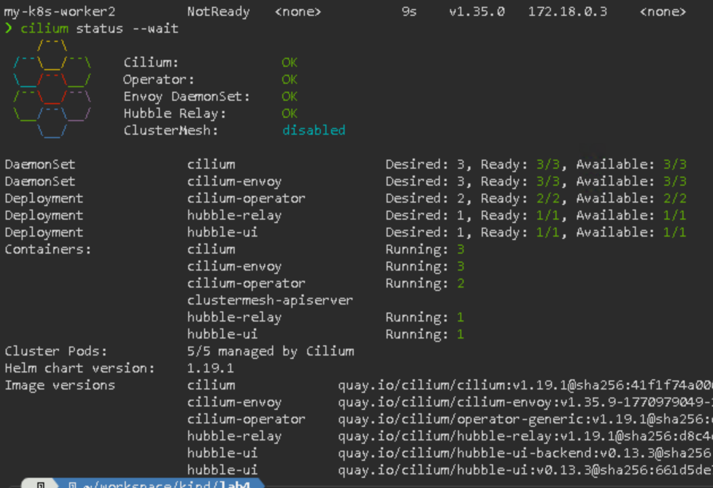
2.4 Verify nodes are Ready
Expected Result:
All nodes should now show Ready status.
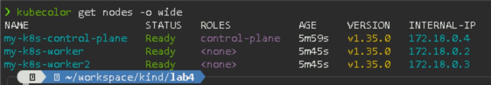
Task 3: Verify Hubble and Access the Hubble UI
Hubble provides deep visibility into the network traffic flowing through your cluster. In this task, you will verify Hubble is working and access the Hubble UI from your remote workstation.
3.1 Verify Hubble status
Expected Result:
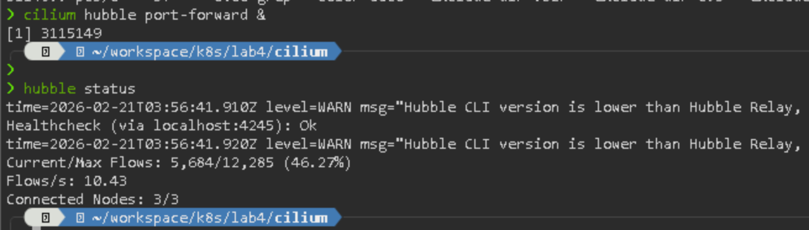
3.2 Observe live traffic with Hubble CLI
This will show the most recent 10 network flows observed by Hubble across the cluster.
Expected Result:
You should see flows related to Cilium health checks and CoreDNS activity.
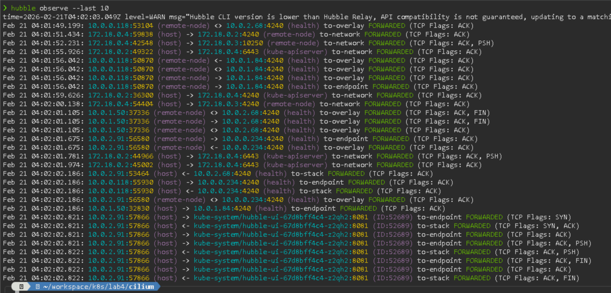
3.3 Access the Hubble UI via kubectl port-forward
To access the Hubble web UI from the Jumphost browser, you need to do a kubectl port forwarding in a terminal window:
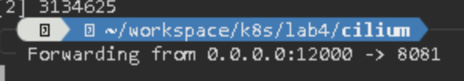
Note: The
--address 0.0.0.0flag makes the forwarded port accessible from remote machines (the Jumphost), not just localhost.
IMPORTANT Keep this terminal window open for the rest of the lab, because the port-forward is dependant on the terminal session. This can be fixed with tools like tmux, but it is beyond the scope of the lab. If you lost the connectivity, just open a new terminal session and redo the forwarding.
From the Jumphost browser, navigate to:
Tip: You can use the bookmark named
Hubble UIin Chrome for quick access during the rest of the lab.
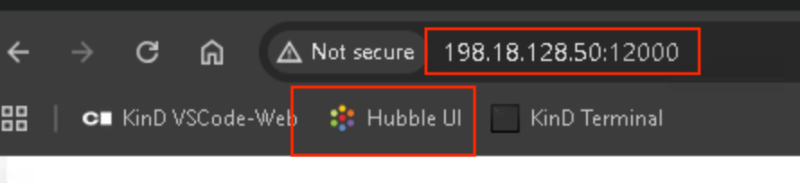
Expected Result:
The Hubble UI loads and shows a service map of your cluster. At this point, you will only see system namespaces (e.g., kube-system).
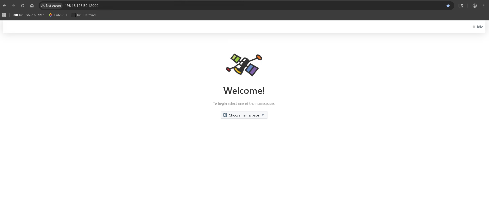
Task 4: Deploy Sample Workloads
In this task, you will deploy workloads across two namespaces, similar to Lab 3, but this time you will also deploy the Lab 1 Express application to demonstrate L7 policy enforcement later.
4.1 Create namespaces
Create workloads folder in ~/workspace/k8s/lab4
Then create demo-ns.yaml file with this content
apiVersion: v1
kind: Namespace
metadata:
name: demo-a
labels:
name: demo-a
---
apiVersion: v1
kind: Namespace
metadata:
name: demo-b
labels:
name: demo-b
Run:
Expected Result:
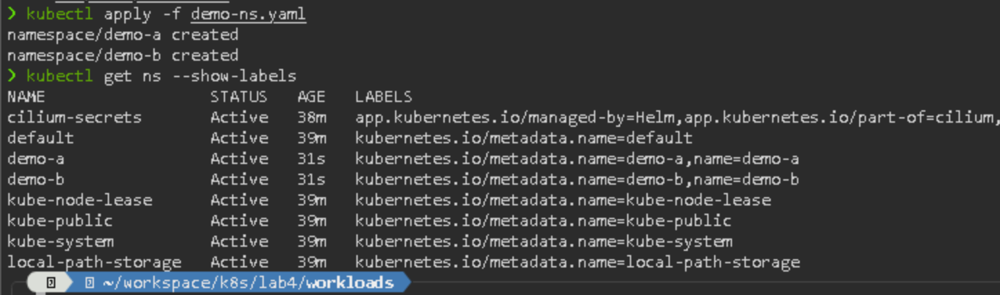
Alternative via kubectl API
Label the namespaces:
4.2 Load the Lab 1 Express image into KinD
This is required just because the labs use KinD and the lab1-express:1.0 image doesn't live in a registry, so this is a "manual copy" of the container image into the kind cluster
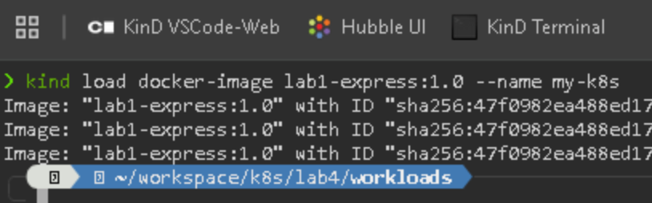
4.3 Deploy NGINX in each namespace
kubectl create deployment nginx-a --image=nginx -n demo-a
kubectl expose deployment nginx-a --port=80 -n demo-a
kubectl create deployment nginx-b --image=nginx -n demo-b
kubectl expose deployment nginx-b --port=80 -n demo-b
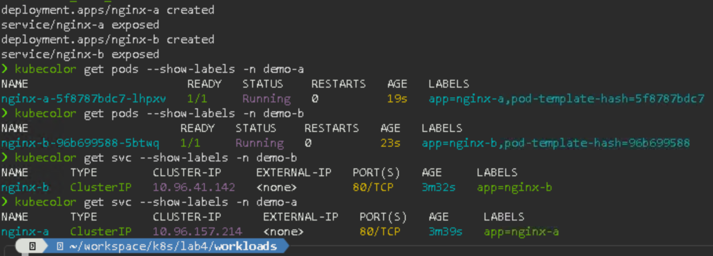
4.4 Deploy the Express app in demo-a
Go to the manifest directory:
Create express-deployment.yaml:
apiVersion: apps/v1
kind: Deployment
metadata:
name: lab1-express
namespace: demo-a
spec:
replicas: 1
selector:
matchLabels:
app: lab1-express
template:
metadata:
labels:
app: lab1-express
spec:
containers:
- name: express
image: lab1-express:1.0
imagePullPolicy: Never
ports:
- containerPort: 3000
---
apiVersion: v1
kind: Service
metadata:
name: lab1-express-svc
namespace: demo-a
spec:
selector:
app: lab1-express
ports:
- port: 3000
targetPort: 3000
Apply:
4.5 Verify all workloads
Expected Result:
demo-a: nginx-a pod + service, lab1-express pod + servicedemo-b: nginx-b pod + service
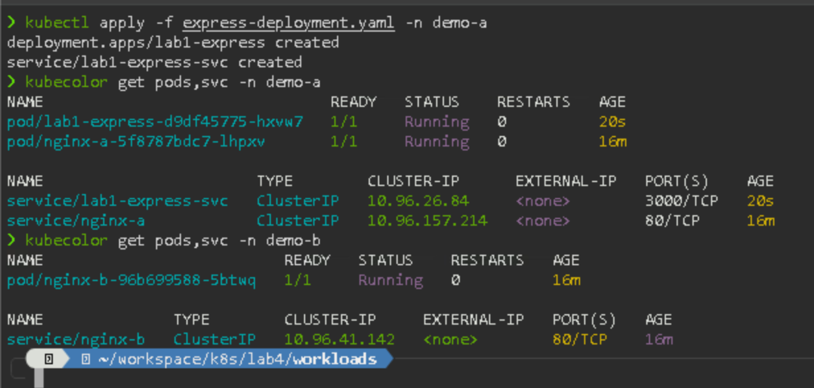
Task 5: Confirm Default Connectivity (No Policies)
Before applying any network policies, verify that all pods can communicate freely.
All traffic is open by default — any pod can reach any other pod across all namespaces and ports.
5.1 Test cross-namespace connectivity
Inside the busybox shell:
wget -q --timeout=5 nginx-b.demo-b.svc.cluster.local -O -
wget -q --timeout=5 lab1-express-svc.demo-a.svc.cluster.local:3000 -O -
Expected Result:
Both requests succeed — NGINX HTML and Express greeting are returned.
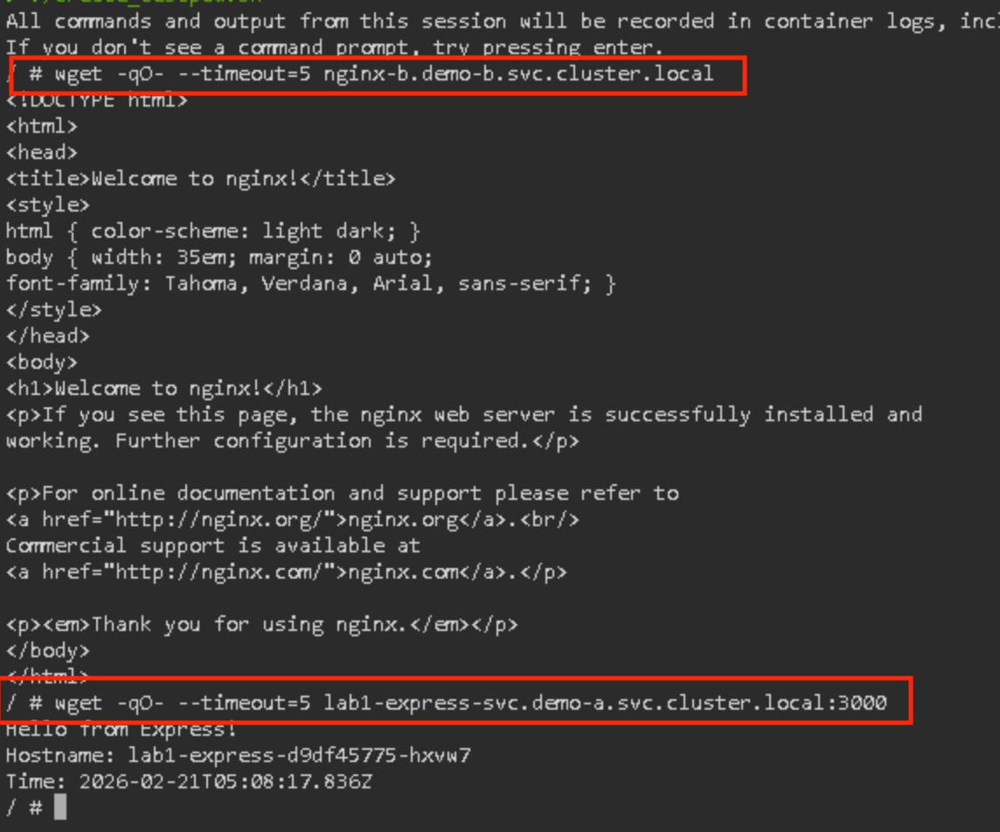
Type exit to leave the test pod.
5.2 Observe default traffic in Hubble
Before applying any policies, check what Hubble sees:
Open the Hubble UI in Chrome and select
demo-afrom the namespace dropdown. You should see all flows as green (forwarded) — no drops yet. This is your baseline.
Network Policies with Cilium
Cilium supports both standard Kubernetes NetworkPolicies (L3/L4) and its own CiliumNetworkPolicy CRD which adds L7 (HTTP, gRPC, Kafka) policy enforcement.
In this section you will build the same policy stack from Lab 3, and then extend it with Cilium-native L7 and FQDN policies.
Important: Throughout this section, you will use both
hubble observeon the CLI and the Hubble UI in Chrome to validate each policy. This builds familiarity with Hubble as a real-time debugging tool — not just something you check at the end.
Task 6: Apply a Default Deny Policy
Same as Lab 3, start with a deny-all baseline.
6.1 Create the policies directory
6.2 Create a deny-all policy
Create default-deny-all.yaml:
apiVersion: networking.k8s.io/v1
kind: NetworkPolicy
metadata:
name: default-deny-all
namespace: demo-a
spec:
podSelector: {}
policyTypes:
- Ingress
- Egress
Apply:
6.3 Verify the policy
6.4 Test connectivity after deny-all
After
deny-all, every connection attempt is blocked — including DNS resolution.
Inside the shell:
Expected Result:
Both DNS resolution and HTTP requests fail — all traffic is blocked.
Type exit to leave the test pod.
6.5 Observe in Hubble
Check the Hubble UI in Chrome — select
demo-aand you should now see red (dropped) flows. Every connection attempt from any pod indemo-ais being ❌. Compare this with the all-green baseline from Task 5.
Task 7: Allow Egress to DNS Service
7.1 Create the allow-dns policy
Create allow-dns-egress.yaml:
apiVersion: networking.k8s.io/v1
kind: NetworkPolicy
metadata:
name: allow-dns-egress
namespace: demo-a
spec:
podSelector: {}
policyTypes:
- Egress
egress:
- to:
- namespaceSelector:
matchLabels:
kubernetes.io/metadata.name: kube-system
ports:
- protocol: UDP
port: 53
- protocol: TCP
port: 53
Apply:
7.2 Validate DNS works
DNS is now allowed, but all HTTP traffic remains blocked.
Inside the shell:
Expected Result:
DNS resolution succeeds, but HTTP requests still fail (no egress rule for port 80 yet).
Type exit to leave the test pod.
7.3 Observe in Hubble
You should now see a mix: DNS flows to
kube-systemshow as forwarded (green), while HTTP attempts still show as dropped (red). In the Hubble UI, the connection line tokube-dnsturns green while everything else remains red.
Task 8: Allow Ingress and HTTP Egress
8.1 Create an ingress policy for nginx-a
Create allow-nginx-a-ingress.yaml:
apiVersion: networking.k8s.io/v1
kind: NetworkPolicy
metadata:
name: allow-nginx-a-ingress
namespace: demo-a
spec:
podSelector:
matchLabels:
app: nginx-a
policyTypes:
- Ingress
ingress:
- from:
- namespaceSelector:
matchLabels:
kubernetes.io/metadata.name: demo-a
ports:
- protocol: TCP
port: 80
Apply:
8.2 Create an ingress policy for the Express app
Create allow-express-ingress.yaml:
apiVersion: networking.k8s.io/v1
kind: NetworkPolicy
metadata:
name: allow-express-ingress
namespace: demo-a
spec:
podSelector:
matchLabels:
app: lab1-express
policyTypes:
- Ingress
ingress:
- from:
- namespaceSelector:
matchLabels:
kubernetes.io/metadata.name: demo-a
ports:
- protocol: TCP
port: 3000
Apply:
8.3 Create an HTTP egress policy
Create allow-http-egress.yaml:
apiVersion: networking.k8s.io/v1
kind: NetworkPolicy
metadata:
name: allow-http-egress
namespace: demo-a
spec:
podSelector: {}
policyTypes:
- Egress
egress:
- to:
- namespaceSelector:
matchLabels:
name: demo-a
ports:
- protocol: TCP
port: 80
- protocol: TCP
port: 443
- protocol: TCP
port: 3000
Apply:
8.4 Validate the complete L3/L4 policy stack
DNS, nginx-a, and lab1-express within
demo-aare all reachable. Cross-namespace traffic todemo-bremains blocked.
Inside the shell:
# DNS should work
nslookup nginx-a.demo-a.svc.cluster.local
# Access to nginx-a in demo-a should work
wget -q --timeout=5 nginx-a.demo-a.svc.cluster.local -O -
# Access to Express app should work
wget -q --timeout=5 lab1-express-svc.demo-a.svc.cluster.local:3000 -O -
# Access to demo-b should still be BLOCKED
wget -qO- --timeout=5 nginx-b.demo-b.svc.cluster.local
Expected Result:
- DNS: works
- nginx-a: works (NGINX welcome page)
- lab1-express: works (Express greeting)
- nginx-b (cross-namespace): blocked (timeout)
Type exit to leave the test pod.
8.5 Observe in Hubble
In the Hubble UI,
demo-ashould now show green flows between test pods,nginx-a, andlab1-express. Attempts to reachdemo-bstill appear as red drops. You can filter by verdict in the UI to isolate allowed vs. ❌ traffic.
8.6 Review the policy stack
Expected Result:
| Policy | Direction | Description |
|---|---|---|
| default-deny-all | Ingress/Egress | Blanket deny, both directions, all pods |
| allow-dns-egress | Egress | Allow DNS (port 53) to kube-system |
| allow-nginx-a-ingress | Ingress | Allow ingress to nginx-a on port 80 |
| allow-express-ingress | Ingress | Allow ingress to Express on port 3000 |
| allow-http-egress | Egress | Allow HTTP/HTTPS/Express egress in demo-a |
8.7 Remove the Express ingress policy
Note: We are intentionally removing the NetworkPolicy for the Express app's ingress here. The Express app ingress will be managed by a CiliumNetworkPolicy in Task 9, which provides both L3/L4 and L7 (HTTP-aware) filtering in a single policy. If we created a standard NetworkPolicy allowing port 3000, it would bypass Cilium's L7 proxy.
Task 9: Cilium L7 HTTP Policy (CiliumNetworkPolicy)
This is where Cilium goes beyond what standard Kubernetes NetworkPolicies can do. A CiliumNetworkPolicy can inspect and filter traffic at the application layer (L7), allowing you to write rules based on HTTP methods, paths, and headers.
Why L7 policies matter: Standard NetworkPolicies only control which pods can talk to which ports (L3/L4). With Cilium L7 policies, you can say: "Allow GET requests to
/healthbut deny POST requests to/admin." This provides much finer-grained security. Why not use both? To enforce L7 filtering, the CiliumNetworkPolicy must be the sole ingress policy for that endpoint — which is why we are removing theallow-express-ingressNetworkPolicy at the end of Task 8.
9.1 Create a CiliumNetworkPolicy for the Express app
Create l7-express-policy.yaml:
apiVersion: "cilium.io/v2"
kind: CiliumNetworkPolicy
metadata:
name: l7-express-policy
namespace: demo-a
spec:
endpointSelector:
matchLabels:
app: lab1-express
ingress:
- fromEndpoints:
- matchLabels:
k8s:io.kubernetes.pod.namespace: demo-a
toPorts:
- ports:
- port: "3000"
protocol: TCP
rules:
http:
- method: "GET"
path: "/"
- method: "GET"
path: "/health"
What this policy does:
- Applies to pods with label
app: lab1-express- Only allows ingress from pods in
demo-a- Only allows
GETrequests to/and/healthon port 3000- Any other HTTP method (POST, PUT, DELETE) or path will be ❌
Apply:
9.2 Verify the CiliumNetworkPolicy
kubectl get ciliumnetworkpolicies -n demo-a
kubectl describe ciliumnetworkpolicy l7-express-policy -n demo-a
Also
cnpcould be used as a shorthand
Expected Result:
The policy should be listed and show the L7 HTTP rules.
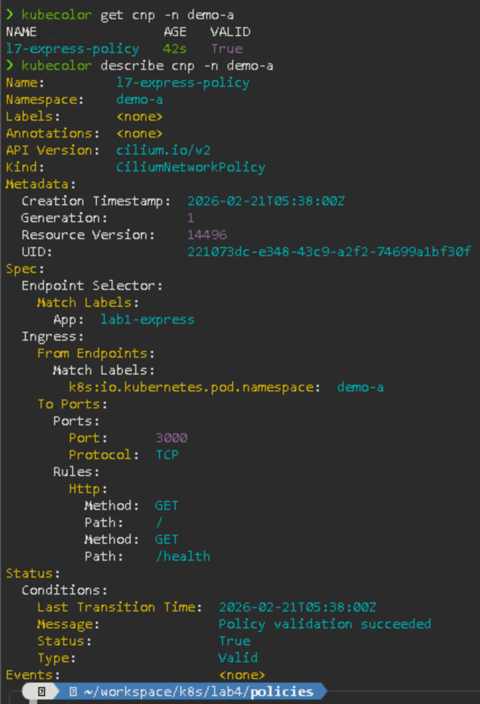
9.3 Test allowed requests (GET / and GET /health)
Cilium's L7 proxy inspects HTTP requests before they reach the application. Only
GET /andGET /healthpass through — all other methods and paths are ❌ with403.
Deploy a curl pod for testing (busybox wget does not support custom HTTP methods easily):
Inside the curl pod:
# GET / — should succeed (200)
curl -s -o /dev/null -w "%{http_code}" http://lab1-express-svc:3000/
# GET /health — should succeed (200)
curl -s -o /dev/null -w "%{http_code}" http://lab1-express-svc:3000/health
Expected Result:
Both return 200.
9.4 Test ❌ requests (POST and unknown paths)
Still inside the curl pod:
# POST to / — should be ❌ (403)
curl -s -o /dev/null -w "%{http_code}" -X POST http://lab1-express-svc:3000/
# GET /admin — should be ❌ (403)
curl -s -o /dev/null -w "%{http_code}" http://lab1-express-svc:3000/admin
# DELETE /health — should be ❌ (403)
curl -s -o /dev/null -w "%{http_code}" -X DELETE http://lab1-express-svc:3000/health
Expected Result:
All three return 403 — Cilium's L7 proxy denies the requests before they reach the Express application.
Type exit to leave the curl pod.
This demonstrates the power of Cilium L7 policies: you can enforce application-layer security without modifying the application code.
9.5 Observe L7 drops in Hubble
Expected Result:
You should see entries showing HTTP requests that were dropped by the L7 policy, including the HTTP method and path.
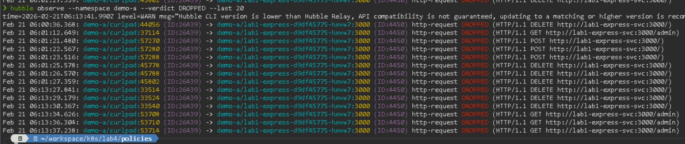
In the Hubble UI, select
demo-a— you should see thelab1-expressservice with both green (allowed GET) and red (dropped POST/DELETE) flows. This is L7 visibility in action.
Task 10: Cilium FQDN-Based Egress Policy
Standard Kubernetes NetworkPolicies can only filter egress by IP address or CIDR. Cilium extends this with FQDN-based egress filtering, allowing you to write rules based on domain names. This is particularly useful for controlling which external services your workloads can reach.
In this task, you will lock down demo-b so that pods can only reach google.com — all other external traffic will be ❌.
Key concept: Cilium's DNS proxy intercepts DNS queries, learns which IPs map to which domain names, and uses that mapping to enforce FQDN-based policies. Without the DNS proxy (
rules: dns:), Cilium cannot associate resolved IPs with domain names and thetoFQDNsrules will not work.
10.1 Create the FQDN egress policy
Create a new folder for demo-b policies:
Create l7-allow-google-egress.yaml:
apiVersion: "cilium.io/v2"
kind: CiliumNetworkPolicy
metadata:
name: l7-allow-google-egress
namespace: demo-b
spec:
endpointSelector: {}
ingress:
- {}
egress:
- toEndpoints:
- matchLabels:
k8s:io.kubernetes.pod.namespace: kube-system
k8s-app: kube-dns
toPorts:
- ports:
- port: "53"
protocol: ANY
rules:
dns:
- matchPattern: "*"
- toFQDNs:
- matchName: "google.com"
- matchName: "www.google.com"
toPorts:
- ports:
- port: "443"
- port: "80"
Key elements of this policy:
endpointSelector: {}— applies to all pods indemo-bingress: - {}— allows all ingress (we're focusing on egress control here)rules: dns: - matchPattern: "*"— critical: activates Cilium's DNS proxy so it can intercept DNS responses and populate the FQDN-to-IP cachetoFQDNs— only allows egress to IPs that resolved fromgoogle.comandwww.google.com- Any egress to other domains (e.g.,
example.com) will be ❌- This is impossible with standard Kubernetes NetworkPolicies, which only support IP/CIDR selectors
Apply:
10.2 Verify the policy
10.3 Test the FQDN policy
Inside the curl pod:
# google.com — should succeed
curl -4 -s -o /dev/null -w "%{http_code}" --max-time 5 https://www.google.com
# example.com — should TIMEOUT (not in the allow list)
curl -4 -s -o /dev/null -w "%{http_code}" --max-time 5 https://example.com
Note: The
-4flag forces IPv4. This avoids issues where DNS returns IPv6 addresses that may not be tracked by Cilium's FQDN cache.
Expected Result:
www.google.com→200example.com→ timeout (connection refused or no response)
Type exit to leave the curl pod.
10.4 Observe in Hubble
In the Hubble UI, select
demo-b. You should see flows towww.google.comas green (forwarded on port 443), and any attempt to reach other domains as red (dropped). Notice how Hubble shows the resolved FQDN in the destination identity — this confirms the DNS proxy is working.
10.5 Verify the FQDN cache
You can inspect what Cilium's DNS proxy has learned:
kubectl exec -n kube-system $(kubectl get pods -n kube-system -l k8s-app=cilium -o jsonpath='{.items[0].metadata.name}') -- cilium fqdn cache list | grep google
Expected Result:
You should see entries mapping google.com and www.google.com to their resolved IP addresses.
Task 11: Expose the Secured App with LoadBalancer and L2 Announcements
Now that your workloads are secured with both L3/L4 and L7 policies, it's time to expose them to the outside world using a production-like access model.
In Lab 2, you used NodePort to expose services externally. Cilium supports a more robust approach using LoadBalancer services with L2 announcements. This allows Cilium to respond to ARP requests on the local network and assign external IPs to services — similar to MetalLB in L2 mode, but built directly into Cilium.
The full traffic path: external request → L2-announced LoadBalancer IP → Cilium → L3/L4 NetworkPolicy check → L7 HTTP policy check → Express app. Your security policies remain enforced even for externally-originated traffic.
11.1 Create a CiliumL2AnnouncementPolicy
Create a new folder named lb in ~/workspace/k8s/lab4/
Create l2-announcement.yaml:
apiVersion: "cilium.io/v2alpha1"
kind: CiliumL2AnnouncementPolicy
metadata:
name: default-l2-policy
spec:
interfaces:
- ^eth[0-9]+
externalIPs: true
loadBalancerIPs: true
Apply:
11.2 Create a CiliumLoadBalancerIPPool
Create lb-ip-pool.yaml:
apiVersion: "cilium.io/v2alpha1"
kind: CiliumLoadBalancerIPPool
metadata:
name: default-pool
spec:
blocks:
- cidr: "172.18.255.200/28"
Note: The
172.18.0.0/16subnet is the default Docker bridge network used by KinD. We pick a small range (172.18.255.200/28) within it for LoadBalancer IPs to avoid conflicts. You can verify your KinD network withdocker network inspect kind.
Apply:
11.3 Update the CiliumNetworkPolicy to allow external ingress
The current l7-express-policy only permits ingress from pods within demo-a. LoadBalancer traffic originates from outside the cluster, so we need to update the policy to also allow external sources — while still enforcing L7 HTTP rules.
Update l7-express-policy.yaml with an additional ingress rule:
apiVersion: "cilium.io/v2"
kind: CiliumNetworkPolicy
metadata:
name: l7-express-policy
namespace: demo-a
spec:
endpointSelector:
matchLabels:
app: lab1-express
ingress:
- fromEndpoints:
- matchLabels:
k8s:io.kubernetes.pod.namespace: demo-a
toPorts:
- ports:
- port: "3000"
protocol: TCP
rules:
http:
- method: "GET"
path: "/"
- method: "GET"
path: "/health"
- fromEntities:
- world
toPorts:
- ports:
- port: "3000"
protocol: TCP
rules:
http:
- method: "GET"
path: "/"
- method: "GET"
path: "/health"
What changed: A second ingress rule was added using
fromEntities: world, which matches traffic originating from outside the cluster (e.g., via the LoadBalancer). The same L7 HTTP rules apply — onlyGET /andGET /healthare allowed. This keeps all Express ingress under a single CiliumNetworkPolicy with consistent L7 enforcement.
Apply:
11.4 Create a LoadBalancer Service for the Express app
Create express-lb-svc.yaml:
apiVersion: v1
kind: Service
metadata:
name: lab1-express-lb
namespace: demo-a
spec:
selector:
app: lab1-express
type: LoadBalancer
ports:
- port: 80
targetPort: 3000
Apply:
11.5 Verify the LoadBalancer IP is assigned
Expected Result:
The EXTERNAL-IP column should show an IP from the 172.18.255.200/28 pool (e.g., 172.18.255.200). Use it to test from the terminal using curl.
NAME TYPE CLUSTER-IP EXTERNAL-IP PORT(S) AGE
lab1-express-lb LoadBalancer 10.96.x.x 172.18.255.200 80:3xxxx/TCP 10s
11.6 Test connectivity via the LoadBalancer IP
Use the EXTERNAL-IP from the kubectl get svc ... output to test with curl:
kubectl get svc lab1-express-lb -n demo-a
curl http://172.18.255.200
curl http://172.18.255.200/health
Expected Result:
11.7 Verify L7 policies still apply to external traffic
The L7 CiliumNetworkPolicy should still enforce HTTP method restrictions, even for traffic coming through the LoadBalancer. Replace <EXTERNAL-IP> with the IP from step 11.5:
# GET / — should succeed (200)
curl -s -o /dev/null -w "%{http_code}" http://<EXTERNAL-IP>/
# POST / — should be ❌ (403)
curl -s -o /dev/null -w "%{http_code}" -X POST http://<EXTERNAL-IP>/
# GET /admin — should be ❌ (403)
curl -s -o /dev/null -w "%{http_code}" http://<EXTERNAL-IP>/admin
Expected Result:
GET /→200POST /→403GET /admin→403
This confirms that your L7 security policies are enforced end-to-end, from external LoadBalancer access all the way down to the application layer.
11.8 Observe in Hubble
In the Hubble UI, look for traffic coming from the
worldidentity intolab1-express. You should see both forwarded (GET) and dropped (POST) flows — proving that L7 enforcement works for external traffic through the LoadBalancer.
Task 12: Observe the Full Picture in Hubble UI
Now that you have active workloads, policies, FQDN filtering, and external access, take a moment to explore the full Hubble UI.
12.1 Ensure port-forwarding is active
If it is not already running:
12.2 Open Hubble UI
From the Jumphost browser, navigate to:
12.3 Explore the Service Maps
- Select the
demo-anamespace — you should seenginx-a,lab1-express, and connections fromworld(LoadBalancer traffic) - Select the
demo-bnamespace — you should see flows towww.google.comand dropped flows to other domains - Try filtering by verdict (forwarded vs. dropped) to isolate policy effects
- Run some test pods and curl commands while watching to see real-time updates
Tip: Hubble is not just a visualization tool — in production, it becomes your primary tool for debugging network policy issues. The patterns you've practiced here (observe by namespace, filter by verdict, check FQDN resolution) are the same ones you'll use to troubleshoot real connectivity problems.
Task 13: Cleanup
This will remove the config you create during the lab. You can keep the files in your local machine for future reference
13.1 Delete namespaces and policies
13.2 Delete the L2 and LoadBalancer resources
cd ~/workspace/k8s/lab4
kubectl delete -f lb/l2-announcement.yaml
kubectl delete -f lb/lb-ip-pool.yaml
13.3 Destroy the KinD cluster
13.4 Confirm cleanup
Expected Result:
No clusters listed.
Lab Completion
Congratulations! You have completed Lab 4!
-
You created a KinD cluster without CNI and without kube-proxy, and installed Cilium as a full kube-proxy replacement using Helm.
-
You built a complete L3/L4 NetworkPolicy stack (deny-all, allow-dns, allow-http) and extended it with Cilium's L7 HTTP-aware CiliumNetworkPolicy.
-
You applied FQDN-based egress policies to control which external domains workloads can reach — a capability unique to Cilium and impossible with standard Kubernetes NetworkPolicies.
-
You configured LoadBalancer services with L2 announcements — a production-like approach to external service access — and verified that L7 policies are enforced end-to-end, even for external traffic.
-
You used Hubble CLI and UI throughout the lab to observe, verify, and debug policy enforcement in real time — building the skills needed to troubleshoot network issues in production.
-
You now understand how Cilium goes beyond traditional CNIs by combining eBPF-powered networking, deep observability, and application-layer security.